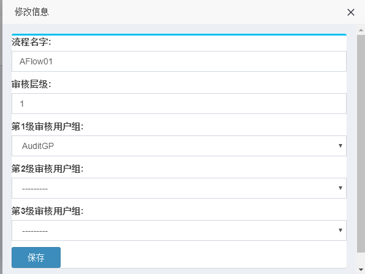

1. 用户系统¶
请先参考快速入门手册，后续补充改章节内容


1.3. 用户配置¶
创建用户管理菜单角色，授权该用户能够访问的菜单权限，步骤 略
1.5. 审核流程配置¶
注解
名称：审核流程名称，若工单系统开启审核功能，需要通过该名称关联审核流
审核层级：表示用户提交工单后需要通过几层审核后，用户才可以执行工单，支持1/2/3 层审核(/表示或)，只能输入1、2、3其中一个数字，若指定为1，即使后面第2级和第3级审核群组关联了用户组 也不会执行。
第1级审核群组：用户提单后，第1层审核权限用户组，审核层级需要指定为1/2/3其中一个才会生效
第2级审核群组：用户提单后，第2层审核权限用户组，审核层级需要指定为2/3其中一个 才会生效
第3级审核群组：用户提单后，第3层审核权限用户组，审核层级需要指定为3才会生效